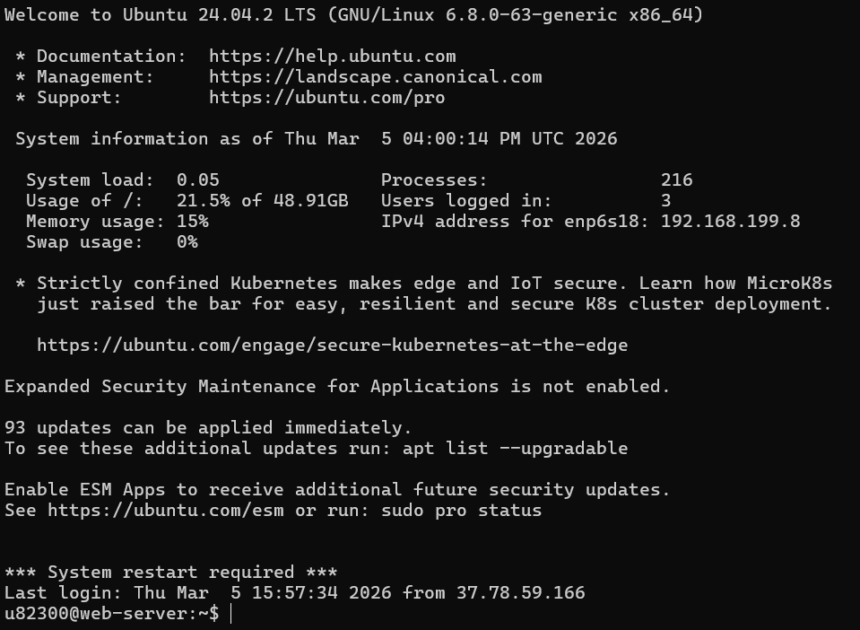
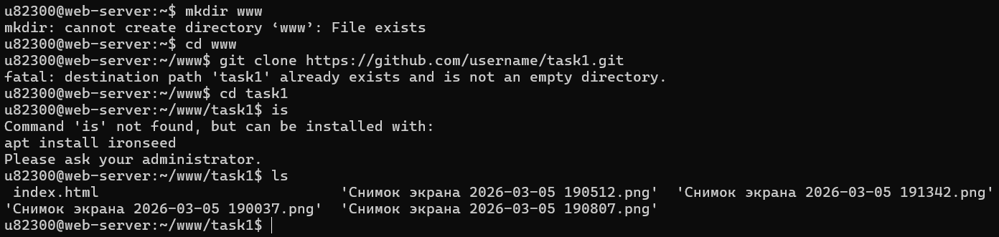
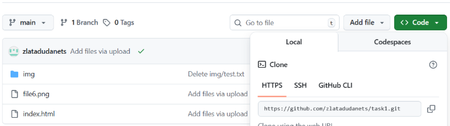
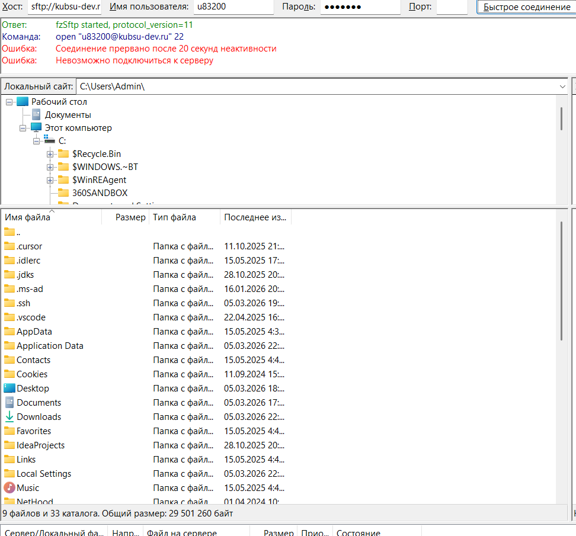

Для выполнения задания я подключилась к серверу kubsu-dev.ru по протоколу SSH, используя логин и пароль. SSH позволяет безопасно управлять сервером через командную стороку
kubsu-dev.ru
Команда позволяет определить IP-адрес сервера

С помощью команды ping проверяем доступность серверам kubsu.ru. Команда отправляет пакеты и показывает время ответа и IP-адрес сервера

nslookup -type=A kubsu.ru. Эта команда запрашивает A-запись домена, которая связывает имя домена с IP-адресом. nslookup -type=MX kubsu.ru. Эта команда запрашивает MX-запись (Mail Exchange) домена. Она указывает, на какие серверы должна доставляться почта.

Для получения информации о домене была использована команда:
whois kubsu.ru и kubsu-dev.ru
С помощью команды whois была получена информация о регистрации домена, включая дату регистрации и регистратора домена.

Репозиторий клониовали на сервер с помощью команды git clone


Для подключения к учебному серверу был использован FTP-клиент FileZilla. В программе были введены данные:
После попытки подключения была получена ошибка соединения, так как сервер доступен только из сети университета.
